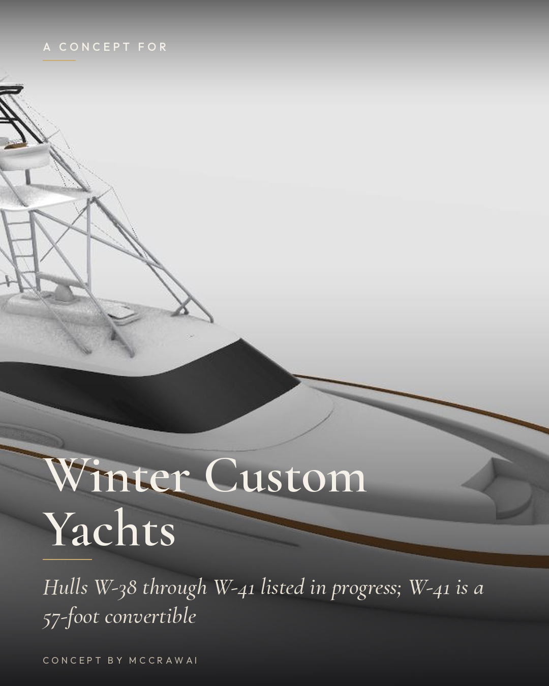

A concept for Tim
Winter Custom Yachts
A quick idea we made for Winter Custom Yachts, built from your own photos.

Featuring: Hulls W-38 through W-41 listed in progress; W-41 is a 57-foot convertible
A concept for Tim
A quick idea we made for Winter Custom Yachts, built from your own photos.

Featuring: Hulls W-38 through W-41 listed in progress; W-41 is a 57-foot convertible